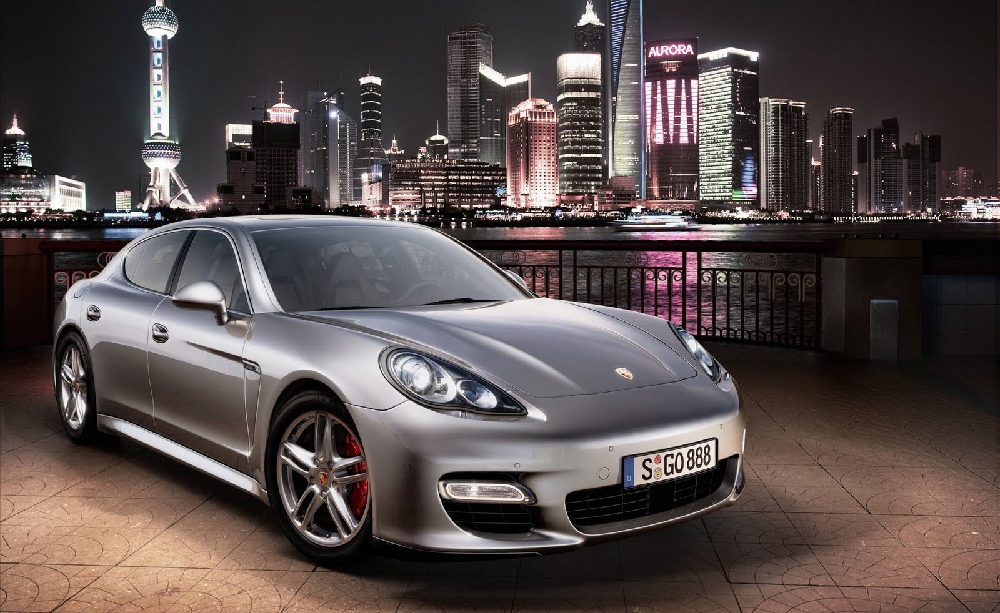
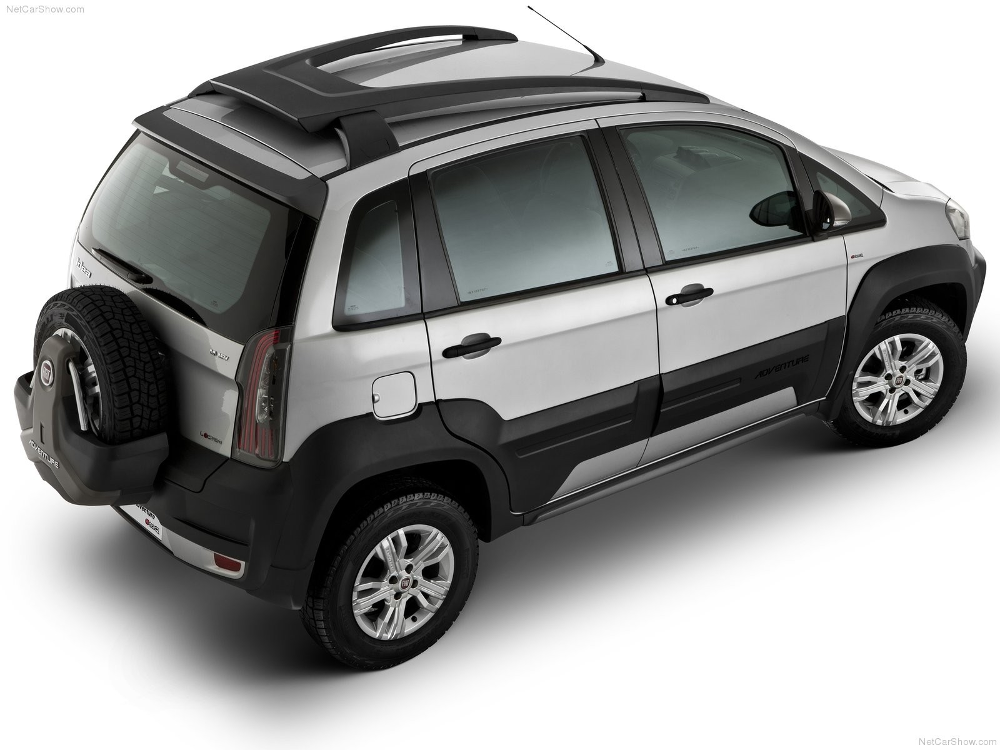
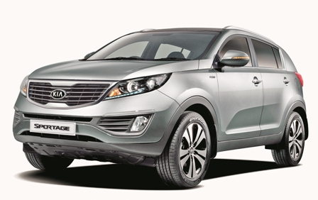

Catálogo

Boxster. Porsche sigue evolucionando y ahora lo hace con una edición muy especial, misma con la que celebra su llegada hace un cuarto de siglo, se trata de Boxster 25 años.
Tan solo limitada a 1250 unidades en todo el mundo, esta versión tan especial está basada en el icónico modelo GTS de la firma alemana. La nueva creación tiene grandes detalles de diseño.
Marca: Porsche
Precio: $65,000.00

Idea. El Fiat Idea es un minimonovolumen de cinco plazas con tracción delantera y motor delantero transversal. Se fabricó desde 2004 hasta 2012 en Italia y hasta 2016 en Brasil. También se vendió como Lancia Musa
Marca: FIAT
Precio: $25,000.00

Sportage. El Kia Sportage es un automóvil todoterreno del segmento C producido por el fabricante surcoreano Kia Motors desde el año 1993. Es un cinco plazas con carrocería de cinco puertas y motor delantero transversal, disponible con tracción delantera o en las cuatro ruedas
Marca: Kia
Precio: $32,000.00